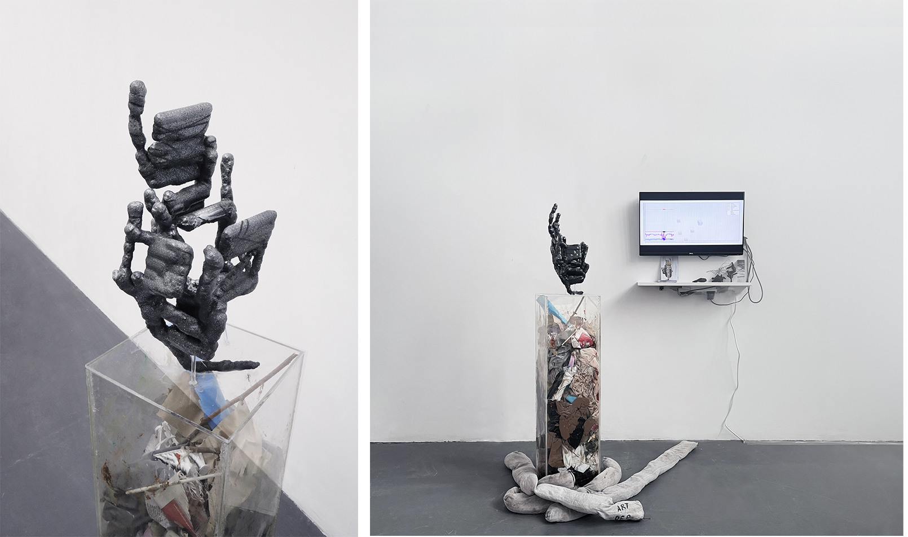

SPIDERLAND
UK, 2023
Python, Blender, API, Algorithm
Acrylic, PLA
SPIDERLAND is a sculpture that provides a wonderland for spiders, generated by a cellular automata algorithm and weather API. This wonderland is inspired by the natural phenomenon of spiders wrapping around trees during the flood in 2010 in Pakistan. This, a self-sustaining ecosystem, contributed to reducing the population of malaria mosquitoes, and lowering the mortality rate from malaria. It is an artistic practice not intended for human consideration, following and manipulating such a complex world order and natural phenomena, thus establishing new modes of coexistence between natural and human societies.
